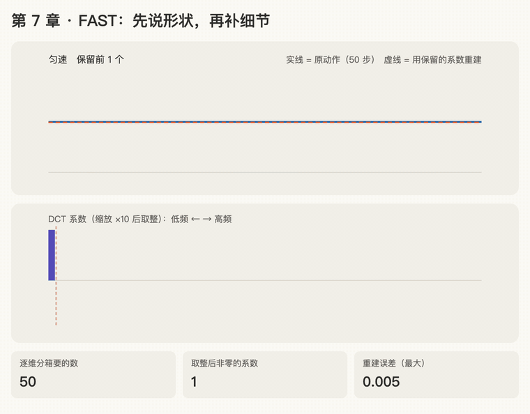

第 7 章 · FAST：先压缩，再变词
本章回答：逐维分箱除了慢，还有什么毛病？FAST 怎么用"压缩"同时解决"慢"和"学不动"？
讲解日期：2026-11-04 · 上一章：第 6 章 动作当词 · 下一章：第 8 章 π0
本章缩写：FAST = Frequency-space Action Sequence Tokenization（频率空间 / 动作序列 / 分词）；DCT = Discrete Cosine Transform（离散 / 余弦 / 变换）；BPE = Byte Pair Encoding（字节 / 对 / 编码）；JPEG = Joint Photographic Experts Group（联合 / 图像 / 专家 / 组）；DC 分量 = Direct Current（直流）分量 = 平均值；γ = scale（取整前乘的倍数）。全表见 appendix-glossary.md
讲解
第 1 步：相邻的词太像，模型学会了"抄上一个"
第 6 章说逐维分箱慢。FAST 论文指出它还有一个更隐蔽的毛病：学不动。
控制频率高时（比如 50 Hz，每 0.02 秒一个动作），相邻两个时刻的动作几乎一样。手往前挪的速度是平滑的，这一刻 Δx 在第 129 格，下一刻多半还是 129，最多变成 130。
白话类比：抄答案就能考高分的考试
老师出题"猜下一个数"，题目全是 128 128 129 129 129 130 130 … 这种慢慢变化的序列。学生发现一个偷懒办法：直接抄上一个数，大部分题都对。分数很高，但学生其实什么都没学会，比如"什么时候该加速、什么时候该停"。
模型也会这样偷懒。原文（materials/text/papers/fast-tokenizer-2501.09747.txt 第 63–70 行）：
"Highly correlated action tokens diminish the effectiveness of the next token prediction objective … low token prediction loss can often be achieved with mappings as trivial as simply copying the most recent action token, leaving models in poor local optima."
意思是：相邻 token 高度相关时，"抄上一个"就能把损失降得很低，模型卡在这个偷懒的解里出不来。
第 2 步：别逐时刻记，改记"整体形状 + 细节"（DCT）
白话类比：描述一段路
逐时刻记录像这样："第 1 个 0.02 秒前进 2 毫米，第 2 个 0.02 秒前进 2 毫米，……"，50 个数几乎一样。
换一种说法："匀速往前走 1 秒，最后稍微减速"。一句话讲清整体形状，再补一点细节。这就是 FAST 的思路。
DCT（离散余弦变换）做的就是这件事
JPEG 压缩图片用的就是它（fast-tokenizer-2501.09747.txt 第 206–220 行）：
- 把一段曲线拆成"慢慢变化的成分"（低频）和"快速抖动的成分"（高频）；
- 原文："Low frequencies capture the overall shape of the signal, while high-frequency components reflect sharp jumps"；
- 机器人动作很平滑，所以大部分信息集中在前几个低频数，后面的高频数几乎都是 0，可以直接舍掉。
FAST 的完整流程（第 222–245 行、图 4）：
一段动作 chunk（每维 50 个数）
① 归一化：按 1%–99% 分位数缩放到 [−1, 1]（和 OpenVLA 一样防异常值）
② 每一维做 DCT：50 个时刻值 → 50 个频率系数（低频在前）
③ 缩放 + 取整：小系数变成 0，矩阵变得很稀疏
④ 拉平后用 BPE（语言模型压缩文字的方法）把常见的组合（比如一长串 0）合并成一个 token
→ 得到少量"信息量高"的动作 token
同时解决两个问题：
| 问题 | 为什么解决了 |
|---|---|
| 慢（第 6 章） | token 少了很多，要念的字少 |
| 学不动（第 1 步） | 每个 token 描述的是整段的一个"形状成分"，相邻 token 不再几乎相同，抄上一个不管用 |
动画演示：DCT：先说形状，再补细节

可交互版：animations/07-fast-dct.html（用浏览器打开，可播放、单步、换随机数重来）。
怎么看：
- 上图实线是一维动作的 50 步，虚线是"只用保留下来的系数"重建出来的；下图是 DCT 系数，左边低频、右边高频，橙色竖线右边的被丢掉。
- 匀速：只有第 1 根柱子（直流分量）非零，保留 1 个系数虚线就和实线重合（第 2 题）。
- 加速 → 匀速 → 减速：要多保留几个低频，虚线才贴上两头的弯。
- 来回抖：能量在高频，留少了完全重建不出来。所以 FAST 适合平滑的机器人动作。
练习与作答记录
题 1：某一维动作在 10 个时刻的格子号是：
128 128 129 129 129 130 130 130 131 131
一个只会"抄上一个"的模型，从第 2 个开始猜（共猜 9 次），能猜对几次？这个成绩说明了什么？
作答（2026-11-04，原话）：5 ◐
点评：差一次，应该是 6 次。逐个对一遍（"抄上一个" = 猜它和前一个相同）：
| 第几个 | 前一个 → 真实值 | 抄上一个对吗 |
|---|---|---|
| 2 | 128 → 128 | ✓ |
| 3 | 128 → 129 | ✗ |
| 4 | 129 → 129 | ✓ |
| 5 | 129 → 129 | ✓ |
| 6 | 129 → 130 | ✗ |
| 7 | 130 → 130 | ✓ |
| 8 | 130 → 130 | ✓ |
| 9 | 130 → 131 | ✗ |
| 10 | 131 → 131 | ✓ |
一共 6 对 3 错，正确率 2/3。小技巧：只数"变化"的地方（128→129、129→130、130→131 三处），9 − 3 = 6。
作答者确认：漏数了第 2 个（128 → 128）。
后半问"说明了什么"还没答。
补答：一个什么都没学会的模型就能对 2/3。这说明了什么？而且模型偏偏猜错的那 3 次，恰好是哪种时刻？
补答作答（2026-11-04，改成选择题后）：1=B（分数虚高，高分不代表学会），2=B（猜错的是动作发生变化的时刻） ✓
点评：对。更要命的是第 2 点：机器人最关键的时刻（开始抓、开始减速、转向）恰好就是"变化"的时刻，偷懒模型偏偏在这些时刻出错。而训练损失被大量"抄就对"的简单题平均掉了，这几道关键题的错误在总分里不显眼，模型也就没动力去学。
题 2：一段 50 步的 chunk 里，Δx 一直是 +0.01（匀速往前）。 1. 用"整体形状 + 细节"的说法，描述它至少要几个有用的数？其余的数大概是多少？ 2. 和逐时刻记 50 个"几乎一样的数"相比，为什么这样模型没法靠"抄上一个"偷懒？
作答（2026-11-04，原话）：形状几乎匀速一条线，细节起点终点，大概要4个数，这个每个都不一样 ◐
点评： 1. ◐ 方向对（"匀速一条线"就是低频形状），但数多了。完全匀速时只要 1 个数：最低频的那个系数（相当于"平均速度"，叫直流分量），其余 49 个都是 0。起点、终点不用单独记，因为整段都是 +0.01，没有变化。再经 BPE 把 49 个 0 合并，整段可能只剩一两个 token，而逐维分箱是 50 个。 你说的 4 个数，适合"先加速、再匀速、最后减速"那种段：有变化，就要多几个低频系数来描述起止的弯。这正是 DCT 的好处：变化越少，数越少。 2. ✅ "每个都不一样"对：每个 token 管的是整段的一个形状成分，不是"下一个时刻"，所以相邻 token 之间没有"抄上一个就对"的规律。
复习重讲（2026-11-07）
复习时 V15 答错（四步没说出来，只说"估算规律再确定时间点"），从头重讲。
重讲第 1 步：逐秒报数（"第 1 秒 10 米、第 2 秒 10 米……"）vs 先说形状（"一直匀速，每秒 10 米"）。FAST 不逐时刻记数，改记"整体形状 + 少量细节"：形状几个数就说清 → 解决慢；每个数说整段的一个特征 → 解决学不动。
问：动画"匀速"档，下图有几根柱子不是 0？描述匀速动作要几个数？
作答（原话）："是0，需要速度和时长2个数" ◐
点评：非零柱子是 1 根，在最左边（直流分量 = 平均速度），因为紧贴纵轴容易看漏。"要速度"的直觉对，但时长不用记：chunk 固定 50 步，长度大家都知道。所以匀速只要 1 个数。上次（2026-11-04）答成 4 个，这次进步到 2 个，还差一步。
问：切到"加速 → 匀速 → 减速"，非零柱子变多还是变少？为什么？
作答（原话）："多了，加减速要加几个柱子" ✓
点评：对。两头的加速、减速是额外的"形状特征"，要多几个数来描述，但这些柱子仍然都挤在左边（低频），右边高频还是 0。动作越平滑，需要的数越少。
重讲第 2 步：取整，把很小的柱子变成 0（流程第 ③ 步）。DCT 后右边的柱子不是严格的 0，而是 0.003、−0.001 这类很小的数。先乘一个倍数再四舍五入，小的就变成 0，于是 50 个数里绝大多数是 0。和 JPEG 一样：丢掉看不出来的细节，换来大幅压缩。
问：倍数从 × 10 改成 × 100 再取整，0 变多还是变少？好处和坏处？
作答（原话）："0变少，更多细节，但是数据杂音变多" ◐
点评："0 变少""细节更多"都对。坏处最主要的是非零的数变多 → token 变多 → 又慢了，压缩效果打折扣；"杂音变多"沾边（连没用的抖动也记下了）。倍数就是"精度 vs 长度"的旋钮，FAST 原文用 scale 这个超参数调它。
重讲第 3 步：BPE 把常见组合并成一个词（流程第 ④ 步）。取整后拉平成一串，例如 8 3 -1 0 0 0 0 … 0（47 个 0）。BPE（Byte Pair Encoding：字节 / 对 / 编码）是语言模型压缩文字的方法：在大量数据里统计哪些片段经常一起出现，就把它们合成一个新词，像"一长串 0"可以合成一个词。最后一段动作只剩几个到十几个 token。
四步串起来：① 归一化到 [−1, 1]（按 1%–99% 分位数，防异常值，和 OpenVLA 一样）→ ② DCT：时刻值 → 形状系数 → ③ 乘倍数 + 取整：小的变 0 → ④ BPE：常见组合并成一个词。
问（V15）：FAST 四步是什么？同时解决哪两个问题？
作答（原话，中间先插问"DCT 什么缩写"，已补进 缩写表）："归一化，DCT，乘倍数 + 取整，BPE" ◐
点评：四步全对、顺序也对。"解决哪两个问题"没答，接着追问。
追问作答（原话）："词太多学点慢，学不动" ✓
点评：对。慢 = 词从 350 个降到十几个；学不动 = 每个词描述整段的一个形状成分，相邻词不再几乎相同，"抄上一个"失效。重讲结束：V15 从 ✗ 到 ✓。
口诀
相邻太像，抄上一个就高分，什么都没学会；
先说形状再补细节，DCT 压一压，BPE 并一并，字少还有料。
本章复习卡片
V14 逐维分箱为什么"学不动"、V15 FAST 四步（见 review.md）